Bard
Bard is Thorium's instrument class. Instruments spend inspiration, a mana-like resource, and grant timed empowerments that boost stats.
Numbered Ω marks pair an instrument with the accessory meant to be used with it.
Markers: † risky to get · C crowd control · + support · ≤ has upgrades · * tedious to get · ν needs the Void subclass · Ω use together · Δ changed by Calamity · ≈ placed by rarity, may be a stage off · italic = Revengeance Mode or higher. Numbers in brackets are base damage. All-class armor follows the class sets on each armor line.
Hover or tap an item to see where it comes from, or switch on the option above to list every source.
Pre-Hardmode
1 Pre-Eye of Cthulhu
BossesThe Grand Thunder BirdKing Slime 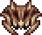 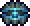 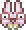
- Weapons
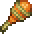
Antlion Maraca ΩCraft at Work Bench: Antlion Mandible ×2, Sand Block ×15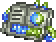
Dual Stylophone νCraft at Anvil: Vibrant Alloy ×6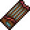
Dynasty Guzheng *Craft at Anvil: Dynasty Wood ×20, Fallen Star ×3- Gold Bugle HornCraft at Anvil: Gold Bar ×8 / Platinum Bugle HornCraft at Anvil: Platinum Bar ×8
- Grand PianoCraft at Anvil: Smooth Coal ×10, any Silver Bar ×8
- Icy PiccoloCraft at Work Bench: Icy Shard ×8
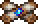
Lightning Claves ΩOpened from Oasis Crate, Mirage Crate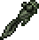
Riveting TadpoleFishing in the Jungle (very rare catch)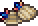
Seashell Castanets ΩCraft at Anvil: Coral ×6, Seashell ×2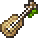
UkuleleCraft at Anvil: Palm Wood ×8, Starfish- Skyware Lute Ω²Craft at Sky Mill: Sunplate Block ×10, Fallen Star ×5
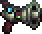
Wulfrum MegaphoneCraft at Anvil: Wulfrum Metal Scrap ×7
- Armor
- Crier's armorCraft at Work Bench (whole set): Cloth ×36
All-class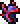
Ancient Shadow armor *Rare drop from Eaters of Souls in the Corruption- Frigid armor *Craft at Anvil (whole set): Frigid Bar ×36
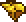
Gold armorCraft at Anvil (whole set): Gold Bar ×75 / Platinum armorCraft at Anvil (whole set): Platinum Bar ×75- Lead armorCraft at Anvil (whole set): Lead Bar ×60
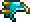
Thorium armorCraft at Thorium Anvil (whole set): Thorium Bar ×45- Vespera armor νCraft at Furnace (whole set): Evostone ×75, Stone Block ×225, Fragment of Earth ×3
- Accessories
- Concert TicketsSold by Party Girl
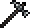
Concussive Instrument ΩCraft at Anvil: any Wood ×5, any Iron Bar ×5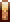
High Quality Reed *Craft at Sawmill: Dynasty Wood ×10- Pick-Shaped Pebble Ω²Craft at Anvil: Stone Block ×5
- Marching BootsSold by Cobbler
- Mix TapeOpened from Scarlet Crate, Sinister Crate
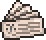
Music NotesCraft at Work Bench: Cloth ×3, Black Ink- Opal RingCraft at Anvil: any Iron Bar, Opal, Fallen Star
- Subsonic Tuner νCraft at Anvil: Vibrant Alloy ×4
- Buffs
- Creativity PotionCraft at Placed Bottle: Bottled Water, Waterleaf, Cactus Fruit
- Earworm Potion *Craft at Placed Bottle: Bottled Water, Worm, Opal
Permanent- Inspiration FragmentCraft at Demon Altar: Fallen Star, Thorium Bar ×2
- Inspiration Gem *Shimmer transmutation of Inspiration Essence, Inspiration Singularity, Inspiration Crystal and 2 more
2 Pre-Eater of Worlds / Brain of Cthulhu
BossesGlowmoth 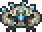 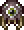 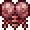
- Weapons
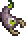
Acid Belcher Ω⁵Chests in the Abandoned Village (a Secrets of the Shadows structure)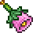
Blooming Bell ΩCraft at Arcane Armor Fabricator: Petal ×8- Crystal Hydraulophone Ω²Craft at Anvil: Pearl Shard ×4, Sea Prism ×8, Navystone ×4
- Dual Stylophone νCraft at Anvil: Vibrant Alloy ×6
- Forest Ocarina Ω³Opened from Jungle Crate, Bramble Crate
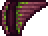
Panflute Ω³Craft at Anvil: Rich Mahogany ×15, Jungle Spores ×8, Stinger ×4- Sinister Honk ΩCraft at Arcane Armor Fabricator: Feather ×7
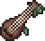
Yew Wood Lute Ω²Craft at Arcane Armor Fabricator: Yew Wood ×20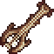
Shanty of the Former Seas Ω² Ω⁴Drops from Desert Scourge- Skyware Lute Ω² Ω⁴Craft at Sky Mill: Sunplate Block ×10, Fallen Star ×5
- Support
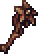
Brittle Star Staff (defensive)Drops from Desert Scourge
- Armor
- Crier's armorCraft at Work Bench (whole set): Cloth ×36
- Jester's armor (moved to this tier by the pack's Calamity/Thorium balancing)Craft at Arcane Armor Fabricator (whole set): Silk ×15
- Victide armorCraft at Anvil (whole set): Sea Remains ×12
All-class- Ancient Shadow armor *Rare drop from Eaters of Souls in the Corruption
- Frigid armorCraft at Anvil (whole set): Frigid Bar ×36
- Gold armorCraft at Anvil (whole set): Gold Bar ×75 / Platinum armorCraft at Anvil (whole set): Platinum Bar ×75
- Lead armor †Craft at Anvil (whole set): Lead Bar ×60
- Vespera armor νCraft at Furnace (whole set): Evostone ×75, Stone Block ×225, Fragment of Earth ×3
- Accessories
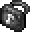
Band KitCraft at Tinkerer's Workshop: High Quality Reed, Cork Grease, Pad o' Paper- Concert TicketsSold by Party Girl
- Concussive Instrument ΩCraft at Anvil: any Wood ×5, any Iron Bar ×5
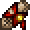
Fan LetterOpened from Crimson Crate, Hematic Crate- Guitar Pick Ω²Craft at Arcane Armor Fabricator: Smooth Coal ×10, any Silver Bar ×6
- Mouthpiece Ω³Craft at Arcane Armor Fabricator: Smooth Coal ×10, any Silver Bar ×6
- Pick-Shaped Pebble Ω⁴Craft at Anvil: Stone Block ×5
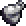
Plunger Mute Ω⁵Craft at Arcane Armor Fabricator: Smooth Coal ×10, any Silver Bar ×6- Mix TapeOpened from Scarlet Crate, Sinister Crate
- Music NotesCraft at Work Bench: Cloth ×3, Black Ink
- Subsonic Tuner νCraft at Anvil: Vibrant Alloy ×4
- Vibration Tuner ΩCraft at Arcane Armor Fabricator: Smooth Coal ×10, any Silver Bar ×6
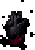
Heart of Darkness *Sold by Shady SalesmanShimmer transmutation of Stress Pills
- Buffs
- Creativity PotionCraft at Placed Bottle: Bottled Water, Waterleaf, Cactus Fruit
- Earworm Potion *Craft at Placed Bottle: Bottled Water, Worm, Opal
3 Pre-Hive Mind / Perforators
Bosses 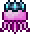 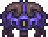 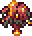
- Weapons
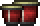
Bongos ΩCraft at Work Bench: Cloth ×8, Hellstone Bar ×12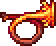
Hot Horn Ω⁵Craft at Anvil: Hellstone Bar ×15- Panflute Ω³Craft at Anvil: Rich Mahogany ×15, Jungle Spores ×8, Stinger ×4
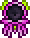
Jellyfish JamDrops from Queen Jellyfish- Marine Wine Glass ΩCraft at Anvil: Aquaite Bar ×8
- Scuba Curva Ω⁵Craft at Anvil: Aquaite Bar ×10, Depth Scales ×6
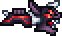
Sonar CannonDrops from Viscount
- Support
- Brittle Star Staff (defensive)Drops from Desert Scourge
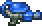
Slime Gun +Opened from Treasure Bag (Queen Slime)
- Armor
- Jester's armorCraft at Arcane Armor Fabricator (whole set): Silk ×15
- Noble's armorCraft at Anvil (whole set): Cloth ×36, Hellstone Bar ×30
All-class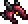
Crimson armorCraft at Anvil (whole set): Crimtane Bar ×60, Tissue Sample ×45- Depth Diver's armorCraft at Anvil (whole set): Aquaite Bar ×42
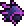
Shadow armorCraft at Anvil (whole set): Demonite Bar ×60, Shadow Scale ×45
- Accessories
- Band KitCraft at Tinkerer's Workshop: High Quality Reed, Cork Grease, Pad o' Paper
- Concert TicketsSold by Party Girl
- Concussive Instrument ΩCraft at Anvil: any Wood ×5, any Iron Bar ×5
- Fan LetterOpened from Crimson Crate, Hematic Crate
- Guitar Pick Ω²Craft at Arcane Armor Fabricator: Smooth Coal ×10, any Silver Bar ×6
- Mouthpiece Ω³Craft at Arcane Armor Fabricator: Smooth Coal ×10, any Silver Bar ×6
- Pick-Shaped Pebble Ω⁴Craft at Anvil: Stone Block ×5
- Plunger Mute Ω⁵Craft at Arcane Armor Fabricator: Smooth Coal ×10, any Silver Bar ×6
- Mix TapeOpened from Scarlet Crate, Sinister Crate
- Music NotesCraft at Work Bench: Cloth ×3, Black Ink
- Subsonic Tuner νCraft at Anvil: Vibrant Alloy ×4
- Vibration Tuner ΩCraft at Arcane Armor Fabricator: Smooth Coal ×10, any Silver Bar ×6
- Heart of DarknessSold by Shady SalesmanShimmer transmutation of Stress Pills
- Buffs
- Creativity PotionCraft at Placed Bottle: Bottled Water, Waterleaf, Cactus Fruit
- Earworm Potion *Craft at Placed Bottle: Bottled Water, Worm, Opal
4 Pre-Skeletron
BossesQueen BeePutrid Pinky 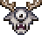 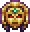 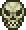
- Weapons
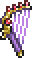
Ancient HarpCraft at Anvil: Cursed Matter ×7, Keystone Shard ×10- Goopwood Wiggle Ω³Craft at Anvil: Corrosive Gel ×30, Goopwood ×24Opened from Treasure Bag (Putrid Pinky)
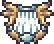
Harp-YCraft at Anvil: Aerialite Bar ×9, Sunplate Block ×3- Hot Horn Ω⁵Craft at Anvil: Hellstone Bar ×15
- Jellyfish JamDrops from Queen Jellyfish
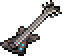
G-GSS: Scrap GuitarCraft at Anvil: Mysterious Circuitry ×5, Dubious Plating ×7, Aerialite Bar ×9, Sea Prism ×7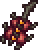
ViolinceDrops from The Perforator HiveOpened from Treasure Bag (The Perforators)- Windward Ω³Craft at Anvil: Aerialite Bar ×7, Sunplate Block ×3
- Support
- Aestheticus +Craft at Anvil: Aerialite Bar ×5, Sea Prism ×10, Fallen Star ×5
- Brittle Star Staff (defensive)Drops from Desert Scourge
- Armor
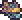
Aerospec armorCraft at Anvil (whole set): Aerialite Bar ×45, Feather ×5- Jester's armorCraft at Arcane Armor Fabricator (whole set): Silk ×15
- Noble's armorCraft at Anvil (whole set): Cloth ×36, Hellstone Bar ×30
All-class- Crimson armorCraft at Anvil (whole set): Crimtane Bar ×60, Tissue Sample ×45
- Depth Diver's armorCraft at Anvil (whole set): Aquaite Bar ×42
- Shadow armorCraft at Anvil (whole set): Demonite Bar ×60, Shadow Scale ×45
- Accessories
- Band KitCraft at Tinkerer's Workshop: High Quality Reed, Cork Grease, Pad o' Paper
- Concert TicketsSold by Party Girl
- Concussive Instrument ΩCraft at Anvil: any Wood ×5, any Iron Bar ×5
- Fan LetterOpened from Crimson Crate, Hematic Crate
- Guitar Pick Ω²Craft at Arcane Armor Fabricator: Smooth Coal ×10, any Silver Bar ×6
- Mouthpiece Ω³Craft at Arcane Armor Fabricator: Smooth Coal ×10, any Silver Bar ×6
- Pick-Shaped Pebble Ω⁴Craft at Anvil: Stone Block ×5
- Plunger Mute Ω⁵Craft at Arcane Armor Fabricator: Smooth Coal ×10, any Silver Bar ×6
- Mix TapeOpened from Scarlet Crate, Sinister Crate
- Music NotesCraft at Work Bench: Cloth ×3, Black Ink
- Subsonic Tuner νCraft at Anvil: Vibrant Alloy ×4
- Vibration Tuner ΩCraft at Arcane Armor Fabricator: Smooth Coal ×10, any Silver Bar ×6
- Heart of Darkness *Sold by Shady SalesmanShimmer transmutation of Stress Pills
- Buffs
- Creativity PotionCraft at Placed Bottle: Bottled Water, Waterleaf, Cactus Fruit
- Earworm Potion *Craft at Placed Bottle: Bottled Water, Worm, Opal
5 Pre-Slime God
BossesTurkor the UngratefulGranite Energy Storm 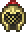 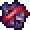
- Weapons
- Bone Trumpet Ω Ω³Craft at Anvil: Darksteel Ingot ×10, Bone ×15
- Bronze Tuning Fork Ω¹Craft at Anvil: Bronze Alloy Fragments ×8
- Calaveras Ω² Ω⁵Craft at Anvil: Bone ×20, Spirit Droplet ×8
- Deep Sea Drawl Ω Ω³Craft at Anvil: Abyss Gravel ×10, Planty Mush ×5, Bone ×3Opened from Hydrothermal Crate, Sulphurous Crate
- Granite Boom BoxCraft at Anvil: Granite Energy Core ×8
- Harp-Y Ω²Craft at Anvil: Aerialite Bar ×9, Sunplate Block ×3
- Hot Horn Ω Ω³Craft at Anvil: Hellstone Bar ×15
- Nocturne Ω²Opened from Obsidian Lock Box
- MicrophoneSold by Mechanic
- ViolinceDrops from The Perforator HiveOpened from Treasure Bag (The Perforators)
- Windward Ω³ Ω⁴Craft at Anvil: Aerialite Bar ×7, Sunplate Block ×3
- Support
- Aestheticus +Craft at Anvil: Aerialite Bar ×5, Sea Prism ×10, Fallen Star ×5
- Brittle Star Staff (defensive)Drops from Desert Scourge
- Armor
- Aerospec armorCraft at Anvil (whole set): Aerialite Bar ×45, Feather ×5
- Noble's armorCraft at Anvil (whole set): Cloth ×36, Hellstone Bar ×30
All-class- Darksteel armorCraft at Anvil (whole set): Darksteel Ingot ×48
- Depth Diver's armorCraft at Anvil (whole set): Aquaite Bar ×42
- Granite armorCraft at Anvil (whole set): Granite Energy Core ×48
- Accessories
- Band KitCraft at Tinkerer's Workshop: High Quality Reed, Cork Grease, Pad o' Paper
- Brass Cap ΩCraft at Anvil: Bronze Alloy Fragments ×10
- Concert TicketsSold by Party Girl
- Concussive Instrument Ω¹Craft at Anvil: any Wood ×5, any Iron Bar ×5
- Devil's SubwooferCraft at Tinkerer's Workshop: Subwoofer, Hellstone Bar ×12
- Fan LetterOpened from Crimson Crate, Hematic Crate
- Guitar Pick Ω²Craft at Arcane Armor Fabricator: Smooth Coal ×10, any Silver Bar ×6
- Loudener Ω³Craft at Anvil: Copper Bar ×5, Tin Bar ×5, Bronze Alloy Fragments ×5
- Mouthpiece Ω⁴Craft at Arcane Armor Fabricator: Smooth Coal ×10, any Silver Bar ×6
- Pick-Shaped Pebble Ω⁵Craft at Anvil: Stone Block ×5
- Plunger Mute Ω⁶Craft at Arcane Armor Fabricator: Smooth Coal ×10, any Silver Bar ×6
- Mix TapeOpened from Scarlet Crate, Sinister Crate
- Music NotesCraft at Work Bench: Cloth ×3, Black Ink
- Shock AbsorberDrops from Granite Energy Storm
- Subsonic Tuner νCraft at Anvil: Vibrant Alloy ×4
- Track PlayerSold by Mechanic
- Vibration Tuner Ω¹Craft at Arcane Armor Fabricator: Smooth Coal ×10, any Silver Bar ×6
- Heart of Darkness *Sold by Shady SalesmanShimmer transmutation of Stress Pills
- Buffs
- Creativity PotionCraft at Placed Bottle: Bottled Water, Waterleaf, Cactus Fruit
- Earworm Potion *Craft at Placed Bottle: Bottled Water, Worm, Opal
6 Pre-Wall of Flesh
BossesThe ExcavatorThe AdvisorStar ScouterWall of Flesh
- Weapons
- Bone Trumpet Ω Ω³Craft at Anvil: Darksteel Ingot ×10, Bone ×15
- Bronze Tuning Fork Ω¹Craft at Anvil: Bronze Alloy Fragments ×8
- Calaveras Ω² Ω⁵Craft at Anvil: Bone ×20, Spirit Droplet ×8
- Deep Sea Drawl Ω Ω³Craft at Anvil: Abyss Gravel ×10, Planty Mush ×5, Bone ×3Opened from Hydrothermal Crate, Sulphurous Crate
- Granite Boom BoxCraft at Anvil: Granite Energy Core ×8
- MicrophoneSold by Mechanic
- Nocturne Ω²Opened from Obsidian Lock Box
- Return to Sludge Ω Ω³Craft at Solidifier: Purified Gel ×15, Blighted Gel ×15Drops from The Slime God
- RoboboeDrops from Star Scouter
- Song of Ice & Fire Ω³ Ω⁴Craft at Demon Altar: Obsidian Rackett, Icy Piccolo, Darksteel Ingot ×10
- Support
- Aestheticus +Craft at Anvil: Aerialite Bar ×5, Sea Prism ×10, Fallen Star ×5
- Brittle Star Staff (defensive)Drops from Desert Scourge
- Armor
- Noble's armorCraft at Anvil (whole set): Cloth ×36, Hellstone Bar ×30
- Statigel armorCraft at Solidifier (whole set): Purified Gel ×34, Blighted Gel ×34
All-class- Darksteel armorCraft at Anvil (whole set): Darksteel Ingot ×48
- Depth Diver's armorCraft at Anvil (whole set): Aquaite Bar ×42
- Accessories
- Band KitCraft at Tinkerer's Workshop: High Quality Reed, Cork Grease, Pad o' Paper
- Brass Cap ΩCraft at Anvil: Bronze Alloy Fragments ×10
- Concert TicketsSold by Party Girl
- Concussive Instrument Ω¹Craft at Anvil: any Wood ×5, any Iron Bar ×5
- Devil's SubwooferCraft at Tinkerer's Workshop: Subwoofer, Hellstone Bar ×12
- Fan LetterOpened from Crimson Crate, Hematic Crate
- Guitar Pick Ω²Craft at Arcane Armor Fabricator: Smooth Coal ×10, any Silver Bar ×6
- Loudener Ω³Craft at Anvil: Copper Bar ×5, Tin Bar ×5, Bronze Alloy Fragments ×5
- Mouthpiece Ω⁴Craft at Arcane Armor Fabricator: Smooth Coal ×10, any Silver Bar ×6
- Pick-Shaped Pebble Ω⁵Craft at Anvil: Stone Block ×5
- Plunger Mute Ω⁶Craft at Arcane Armor Fabricator: Smooth Coal ×10, any Silver Bar ×6
- Mix TapeOpened from Scarlet Crate, Sinister Crate
- Music NotesCraft at Work Bench: Cloth ×3, Black Ink
- Shock AbsorberDrops from Granite Energy Storm
- Subsonic Tuner νCraft at Anvil: Vibrant Alloy ×4
- Track PlayerSold by Mechanic
- Vibration Tuner Ω¹Craft at Arcane Armor Fabricator: Smooth Coal ×10, any Silver Bar ×6
- Heart of Darkness *Sold by Shady SalesmanShimmer transmutation of Stress Pills
- Buffs
- Creativity PotionCraft at Placed Bottle: Bottled Water, Waterleaf, Cactus Fruit
- Earworm Potion *Craft at Placed Bottle: Bottled Water, Worm, Opal
Hardmode
From here the lists are read from the pack's installed mod files: every Bard weapon, armor piece and accessory in the pack, placed at the stage its recipe or boss drop first becomes available under this pack's recipe changes. Numbers are base damage after the pack's balance changes, and a boss name means the item drops there. ≈ marks an item placed by rarity alone because it comes from an ordinary enemy, chest or shop, so it can be a stage off.
Every Hardmode stage uses Conductor's Stand, Creativity Potion, Earworm Potion and Inspirational Reach Potion.
7 Pre-Mechanical Bosses
BossesBorean StriderFallen BeholderDreadnautilusQueen SlimeCryogenfirst mechanical boss
- Thorium weapons
- Cobalt Gong (140)Craft at Anvil: Cobalt Bar ×12
- Flesh Horn (110)Craft at Anvil: Unfathomable Flesh ×8
- The Lullaby ≈ (100)Drops from Lycan
- Xylophone (94)Craft at Anvil: Crystal Geode ×10
- Acoustic Guitar (85)Craft at Anvil: Pearlwood ×16, Unicorn Horn, Pixie Dust ×8
- Cello (85, Fallen Beholder)Drops from Fallen Beholder
- Riff Weaver (80)Craft at Anvil: Spider Fang ×16
- Snowstorm Banjo ≈ (72)Drops from Snow Singa
- Resonator's Arm ≈ (70)Craft at Mythril Anvil: Dynasty Wood ×20, Soul of Night ×12
- Shadowflame Warhorn (68)Drops from Goblin Warlock
- Geode Saxophone (66)Craft at Anvil: Crystal Geode ×8
- Violin (56)Craft at Anvil: Boreal Wood ×20, Life Quartz ×6, Light Shard
- Wind Chimes (54)Craft at Anvil: Cloud ×15, Rain Cloud ×15, Soul of Flight ×4
- Frostwind Cymbals (52)Craft at Anvil: Soul of Light ×6, Soul of Night ×6, Frost Core
- Serpent's Cry (48)Craft at Anvil: Abyssal Chitin ×10
- Palladium Cowbell (38)Craft at Anvil: Palladium Bar ×12
- Scholar's Harp ≈ (26)Sold by Wizard
- Bagpipe (17)Craft at Anvil: Blood Cell ×8
- Lodestone Radio (17)Craft at Anvil: Lodestone Ingot ×9
- Crossmod weapons
- Calamity Bard & Healer
- Arctic Reinforcement (49, Cryogen)Drops from Cryogen
Infernal Arsenal- Forever Hungry (48, Wall of Flesh)Drops from Wall of Flesh
- Class armor
- Thorium
- Marching Band set (3 pieces)Craft at Anvil (whole set): Silk ×24, Soul of Light ×24
- Class accessories
- Thorium
- Bard Emblem ≈Drops from Wall of FleshShimmer transmutation of Cleric Emblem
- Conductor's Baton ≈Sold by Merchant
- Full ScoreCraft at Work Bench: Music Notes, Ancient Cloth ×6
- Headset ≈Sold by Mechanic
- Musician's Handbook ≈Sold by Merchant
- All-class armor
- Crystal Assassin armorDrops from Queen Slime
- Dragon's armorCraft at Mythril Anvil (whole set): Green Dragon Scale ×45 / Flesh armorCraft at Anvil (whole set): Unfathomable Flesh ×45
- Durasteel armorSold by Blacksmith
- Mollusk armor †Craft at Anvil (whole set): Mollusk Husk ×31, Sea Prism ×60
8 Post-Mechanical Boss 1
BossesAquatic Scourgesecond mechanical boss
- Thorium weapons
- Thunderstruck ≈ (160)Sold by Weapon Master
- Sunflare Guitar ≈ (104)Drops from Le Fantôme
- Portable Wintergatan ≈ (97)Craft at Mythril Anvil: Pearlwood ×30, Hallowed Bar ×12
- Mythril Melodica (82)Craft at Mythril Anvil: Mythril Bar ×10
- Greedful Gurdy ≈ (80)Drops from Flying Dutchman
- Baritone Saxophone ≈ (64)Sold by Steampunker
- Steam Flute ≈ (64)Craft at Mythril Anvil: Flute, Cog ×20
- Vinyl Record (58)Craft at Mythril Anvil: Smooth Coal ×12, Soul of Night ×8
- Orichalcum Slide Whistle (55)Craft at Mythril Anvil: Orichalcum Bar ×12
- Trombone (55)Craft at Anvil: Forbidden Fragment ×2, Pharaoh's Breath ×8
- 24-Carat Tuba ≈ (46)Drops from Flying Dutchman
- Kazoo ≈ (44)Sold by Party Girl
- Guilty Pleasure ≈ (42)Craft at Mythril Anvil: Acoustic Guitar, Soul of Plight ×8, Soul of Sight ×8
- Valadium Theremin (42)Craft at Mythril Anvil: Valadium Ingot ×9
- Dragon's Wail (40)Craft at Mythril Anvil: Green Dragon Scale ×9
- Zunpet ≈ (40)Craft at Mythril Anvil: Hallowed Bar ×12, Hallowed Charm ×10, Light Shard, Dark Shard
- Chrono Ocarina (32)Craft at Anvil: Living Leaf, Hellstone Bar, Aquaite Bar, Soul of Night, Forbidden Fragment, Soul of Light
- Concertina ≈ (30)Drops from Sea-Shanty Singer
- Crossmod weapons
- Ragnarok
- Belching Saxophone ≈ (32)Drops from Belching Coral
Infernal Arsenal- Sulphuric Shanty (50, Aquatic Scourge)Drops from Aquatic Scourge
Thorium Bosses Reworked- Eater Piper ≈ (66)Drops from Corrupt Mimic
- King Trumpet ≈ (65)Drops from Mycelium Mimic
- Flute of Curses ≈ (40)Drops from Crimson Mimic
- Class accessories
- Thorium
- Auto Tuner ≈Sold by Steampunker
- Digital Tuner ≈Craft at Tinkerer's Workshop: Bard Emblem, Vibration TunerShimmer transmutation of Guitar Pick Claw
- Epic Mouthpiece ≈Craft at Tinkerer's Workshop: Bard Emblem, MouthpieceShimmer transmutation of Digital Tuner
- Guitar Pick Claw ≈Craft at Tinkerer's Workshop: Bard Emblem, Guitar PickShimmer transmutation of Straight Mute
- Straight Mute ≈Craft at Tinkerer's Workshop: Bard Emblem, Plunger MuteShimmer transmutation of Epic Mouthpiece
Thorium Bosses Reworked- Flying Flute ≈Drops from Hallowed Mimic
- All-class armor
- Crystal Assassin armorDrops from Queen Slime
- Dragon's armorCraft at Mythril Anvil (whole set): Green Dragon Scale ×45 / Flesh armorCraft at Anvil (whole set): Unfathomable Flesh ×45
- Durasteel armorSold by Blacksmith
- Mollusk armor †Craft at Anvil (whole set): Mollusk Husk ×31, Sea Prism ×60
9 Post-Mechanical Boss 2
BossesBrimstone Elementalthird mechanical boss
- Thorium weapons
- Adamantite Klaxon (144)Craft at Mythril Anvil: Adamantite Bar ×12
- Titanium Cimbasso (60)Craft at Mythril Anvil: Titanium Bar ×13
- Crossmod weapons
- Calamity Bard & Healer
- K-GSS: Scuffed Keytar (47)Craft at Mythril Anvil: Mysterious Circuitry ×15, Dubious Plating ×5, any Mythril Bar ×10, Soul of Might ×20
Infernal Arsenal- Brimstone Harp (55, Brimstone Elemental)Drops from Brimstone Elemental
- Class armor
- Calamity Bard & Healer
- Daedalus HatCraft at Mythril Anvil: Cryonic Bar ×12
Ragnarok- Daedalus HeadgearCraft at Mythril Anvil: Cryonic Bar ×12, Essence of Eleum
- Class accessories
- Thorium
- Diss Track ≈Craft at Mythril Anvil: Mix Tape, Cursed Cloth ×12
- All-class armor
- Crystal Assassin armorDrops from Queen Slime
- Dragon's armorCraft at Mythril Anvil (whole set): Green Dragon Scale ×45 / Flesh armorCraft at Anvil (whole set): Unfathomable Flesh ×45
- Durasteel armorSold by Blacksmith
- Mollusk armor †Craft at Anvil (whole set): Mollusk Husk ×31, Sea Prism ×60
10 Pre-Polaris
BossesPolaris
- Thorium weapons
- Hallowed Megaphone (64)Craft at Mythril Anvil: Hallowed Bar ×12
- Class armor
- Thorium
- Hallowed ChapeauCraft at Mythril Anvil: Hallowed Bar ×12
- All-class armor
- Dragon's armorCraft at Mythril Anvil (whole set): Green Dragon Scale ×45 / Flesh armorCraft at Anvil (whole set): Unfathomable Flesh ×45
- Durasteel armorSold by Blacksmith
- Mollusk armor †Craft at Anvil (whole set): Mollusk Husk ×31, Sea Prism ×60
11 Pre-Plantera
BossesLichCalamitas ClonePlantera
- Thorium weapons
- Prime's Roar (200)Craft at Soul Forge: Strange Plating ×12
- The Green Tambourine (108)Craft at Mythril Anvil: Cloth ×8, Chlorophyte Bar ×10
- Cadaver's Cornet (102, Lich)Drops from Lich
- Hell's Bell (66)Craft at Anvil: Bell, Hellstone Bar ×8, Soul of Plight ×8
- Midnight Bass Booster ≈ (65)Craft at Soul Forge: Strange Plating ×12, Subwoofer
- Crossmod weapons
- Ragnarok
- Calamity Bell (180, Calamitas Clone)Drops from Calamitas Clone
Infernal Arsenal- Ballad of Bells (75)Craft at Mythril Anvil: Bell, Essence of Eleum ×3, Essence of Havoc ×3, Essence of Sunlight ×3, Ashes of Calamity ×5
SOTS Bard & Healer- Abso-Lute (92)Craft at Mythril Anvil: Absolute Alloy ×11, Clairvoyage (+1 other recipe)
- Class armor
- Thorium
- Cyber Punk set (3 pieces)Craft at Soul Forge (whole set): Strange Plating ×12, Hallowed Bar ×24
- Class accessories
- SOTS Bard & Healer
- Ring of RestCraft at Thorium Anvil: Inspiration Shard, Fragment of Inferno ×2, Soul of Plight ×5
- All-class armor
- Crystal Assassin armorDrops from Queen Slime
- Dragon's armorCraft at Mythril Anvil (whole set): Green Dragon Scale ×45 / Flesh armorCraft at Anvil (whole set): Unfathomable Flesh ×45
- Durasteel armorSold by Blacksmith
- Mollusk armor †Craft at Anvil (whole set): Mollusk Husk ×31, Sea Prism ×60
12 Pre-Golem
BossesLeviathan and AnahitaAstrum AureusOcramGolem
- Thorium weapons
- Strawberry Heart ≈ (158)Craft at Soul Forge: Illumite Ingot ×10, Pixie Dust ×10, Life Quartz ×5
- Ghastly French Horn (124)Craft at Mythril Anvil: Spectre Bar ×12
- The Maw (120)Craft at Mythril Anvil: Bloom Weave ×10, Chlorophyte Bar ×10
- Turtle Drums ≈ (108)Craft at Mythril Anvil: Cloth ×10, Turtle Shell, Chlorophyte Bar ×10
- Vuvuzela Blue ≈ (100)Drops from PlanteraShimmer transmutation of Vuvuzela Green
- Pungi (85)Craft at Mythril Anvil: Solar Pebble ×12, Solar Tablet Fragment ×10
- One-man Quartet ≈ (30)Sold by Steampunker
- Crossmod weapons
- Calamity Bard & Healer
- Interstellar Shredder (128, Astrum Aureus)Drops from Astrum Aureus
- Star Cluster ≈ (34)Drops from Astral ProbeOpened from Astral Crate
- Song of the Ancients (25)Craft at Mythril Anvil: Broken Hero Fragment ×3
Ragnarok- Drum Stick (110)Craft at Mythril Anvil: Drum Mallet, Perennial Bar ×8
- Stellar Riff (65, Astrum Aureus)Drops from Astrum Aureus
- Anahita's Arpeggio ≈ (60)Opened from Treasure Bag (Leviathan and Anahita)
Infernal Arsenal- Ocram's Roar (100, Ocram)Craft at Soul Forge: Aureus Cell ×10, Sulphur Spitter, Soul of Sight ×5, Soul of Might ×5, Soul of Fright ×5, Soul of Night ×8, Bone ×12, Cursed Flame ×8Drops from Ocram
- Class armor
- Thorium
- Ornate set (3 pieces)Craft at Mythril Anvil (whole set): Bloom Weave ×30
Consolaria- Ancient Siren set (3 pieces)Craft at Mythril Anvil (whole set): Adamantite or Titanium Bar ×32, Soul of Blight ×35, Ancient Hallowed Plate Mail, Ancient Hallowed Greaves
- Siren set (3 pieces)Craft at Mythril Anvil (whole set): Adamantite or Titanium Bar ×32, Soul of Blight ×35, Hallowed Plate Mail, Hallowed Greaves
- Class accessories
- Ragnarok
- Siren Scale (Leviathan and Anahita)Drops from The LeviathanOpened from Treasure Bag (Leviathan and Anahita)
Thorium Bosses Reworked- Fan Donations ≈Craft at Tinkerer's Workshop: Pick-Shaped Pebble, Loudener, Concussive Instrument, Impulse Amplifier, Fan Letter, Waxy Rosin, Bloom Weave ×5 (+1 other recipe)
- All-class armor
- Reaver armorCraft at Mythril Anvil (whole set): Perennial Bar ×45
- Clamitas armorCraft at Mythril Anvil (whole set): Mollusk Shellmet, Husk of Calamity ×42, Ashes of Calamity ×19, Amidias' Pendant, Mollusk Shelleggings, Mollusk Shellplate, Giant Pearl
- Demon Blood armorCraft at Soul Forge (whole set): Demon Blood Shard ×40
13 Post-Golem
BossesForgotten One
- Thorium weapons
- Call of Cthulhu ≈ (204)Craft at Ancient Manipulator: Siren's Lyre, Abyssal Shadow ×3
- Turntable ≈ (190)Drops from Martian Saucer
- Bassoon (188)Craft at Soul Forge: Dark Matter ×6, Darksteel Ingot ×8
- Fishbone ≈ (177)Aquatic Depths Chest in the Dungeon (locked biome chest)
- Haunting Bass Drum (174)Drops from Pumpking
- Clarinet (172)Craft at Soul Forge: Dark Matter ×6, Darksteel Ingot ×6
- Idol's Microphone ≈ (155)Craft at Soul Forge: Microphone, Illumite Ingot ×8, Soul of Light ×8
- Siren's Lyre (154, Forgotten One)Drops from Forgotten One
- Jingle Bells (130)Drops from Santa-NK1
- The Triangle ≈ (114)Drops from Martian Saucer
- Buisine ≈ (100)Craft at Mythril Anvil: Holy Knight's Alloy ×8
- Betsy's Bellow ≈ (94)Drops from Betsy
- The Bopper ≈ (74)Sold by Cyborg
- Duke's Regal Carnyx ≈ (60)Drops from Duke Fishron
- Organ (40)Craft at Soul Forge: Dark Matter ×10, Darksteel Ingot ×12, Ectoplasm ×8
- The Black Otamatone ≈ (20)Reward for the Tracker's contract "Tracker's End" (Bone Lee)
- Crossmod weapons
- Calamity Bard & Healer
- Tectonic Plates (80)Craft at Mythril Anvil: Scoria Bar ×10
Ragnarok- Steampipes ≈ (165)Craft at Mythril Anvil: Scoria Bar ×12, Bagpipe
Infernal Arsenal- Restored Deep Sea Drawl ≈ (76)Craft at Soul Forge: Deep Sea Drawl, Mouthpiece Shard, Bell Shard, Body Shard
Thorium Bosses Reworked- Deep Sea Odyssey (88, Forgotten One)Drops from Forgotten One Released
- Class armor
- Thorium
- Maestro's set (3 pieces)Craft at Mythril Anvil (whole set): Dark Matter ×18, Silk ×26
Calamity Bard & Healer- Hydrothermic HatCraft at Mythril Anvil: Scoria Bar ×10
Thorium Bosses Reworked- Titan HatCraft at Soul Forge: Titanic Bar ×12
- Class accessories
- Calamity Bard & Healer
- Noisebringer Goliath ≈Craft at Soul Forge: Subwoofer ×4, Plague Cell Canister ×16, Bio Matter ×8 (+1 other recipe)
Ragnarok- Sigil of a Cruel World ≈Craft at Mythril Anvil: Avenger Emblem, Band Kit, Scoria Bar ×5, Ashes of Calamity ×15
- All-class armor
- Reaver armorCraft at Mythril Anvil (whole set): Perennial Bar ×45
- Clamitas armorCraft at Mythril Anvil (whole set): Mollusk Shellmet, Husk of Calamity ×42, Ashes of Calamity ×19, Amidias' Pendant, Mollusk Shelleggings, Mollusk Shellplate, Giant Pearl
- Conduit armorCraft at Mythril Anvil (whole set): Martian Conduit Plating ×120
- Demon Blood armorCraft at Soul Forge (whole set): Demon Blood Shard ×40
14 Pre-Lunar Events
BossesDuke FishronThe Plaguebringer GoliathEmpress of LightLuxRavagerLunatic Cultist
- Crossmod weapons
- Calamity Bard & Healer
- Flight of the Goliath (45, Plaguebringer Goliath)Drops from The Plaguebringer Goliath
Infernal Arsenal- I-LSR Infrariff (70)Craft at Mythril Anvil: Mysterious Circuitry ×15, Dubious Plating ×15, Infected Armor Plating ×10, Life Alloy ×5
- Necrotic Chorus (50, Ravager)Drops from Ravager
SOTS Bard & Healer- Ultrasonic Bass Booster ≈ (66)Craft at Mythril Anvil: Midnight Bass Booster, Sonar Cannon, Phase Bar ×32, Dissolving Brilliance
- Class accessories
- SOTS Bard & Healer
- Hypersonic TunerCraft at Mythril Anvil: Subsonic Tuner, Phase Bar ×16, Dissolving Brilliance
- All-class armor
- Terrarium armor (no focus)Craft at Ancient Manipulator (whole set): Terrarium Core ×36
- Conduit armorCraft at Mythril Anvil (whole set): Martian Conduit Plating ×120
15 Pre-Moon Lord
BossesAstrum DeusSubspace SerpentAstrageldonBereft VassalMoon Lord
- Thorium weapons
- Sonic Amplifier ≈ (275)Drops from Moon Lord's Core
- Shooting Star Blast-Guitar (250)Craft at Ancient Manipulator: Shooting Star Fragment ×18
- Sound Sage's Lament (96)Craft at Ancient Manipulator: Shooting Star Fragment ×18
- Terrarium Autoharp (42)Craft at Ancient Manipulator: Terrarium Core ×9
- Crossmod weapons
- Calamity Bard & Healer
- Supercluster ≈ (201)Craft at Ancient Manipulator: Return to Sludge, Star Cluster, Metanova Bar ×5
- Dust Devil Drums (92, Bereft Vassal)Drops from Argus, the Bereft Vassal
Infernal Arsenal- Starwind Flute (80, Astrum Deus)Drops from Astrum Deus
SOTS Bard & Healer- Serpent Charmer of Sage ≈ (69)Craft at Mythril Anvil: Steam Flute, Sanguite Scales ×15
- Class armor
- Calamity Bard & Healer
- Intergelactic ClocheCraft at Ancient Manipulator: Statigel Earrings, Metanova Bar ×6
Ragnarok- Intergelactic RobohelmCraft at Ancient Manipulator: Statigel Hat, Metanova Bar ×6
- Class accessories
- Thorium
- Terrarium Surround Sound ≈Craft at Ancient Manipulator: Devil's Subwoofer, Terrarium Core ×8
SOTS Bard & Healer- Infrasonic Tuner ≈Craft at Mythril Anvil: Subsonic Tuner, Cursed Cassette, Leaking Ink Pipe, Sanguite Scales ×8
- All-class armor
- Astral armorCraft at Ancient Manipulator (whole set): Astral Bar ×54
- Terrarium armor (no focus)Craft at Ancient Manipulator (whole set): Terrarium Core ×36
Post-Moon Lord
Thorium's own bard gear ends with the Primordials at stage 20. Its final armor needs Auric Bars in this pack, so it lands at stage 21. Between Moon Lord and the Primordials the crossmods carry the class.
16 Pre-Providence
BossesProfaned GuardiansDragonfollyProvidence
- Crossmod weapons
- Calamity Bard & Healer
- Big Bang Cymbals (252)Craft at Ancient Manipulator: Frostwind Cymbals, Luminite Bar ×5, Life Alloy ×5, Shooting Star Fragment ×5
- Song of the Elements (77)Craft at Ancient Manipulator: Song of the Ancients, Luminite Bar ×5, Life Alloy ×5, Shooting Star Fragment ×5
Infernal Arsenal- AirPod Shawty ≈ (125)Craft at Ancient Manipulator: Luminite Bar ×10, Track Player, Illegal Gun Parts, Shooting Star Fragment ×15
- I-PMA Mechamatone (110)Craft at Ancient Manipulator: Mysterious Circuitry ×12, Dubious Plating ×18, Uelibloom Bar ×8, Luminite Bar ×4 (+1 other recipe)
- Birb Call (80, Dragonfolly)Drops from DragonfollyOpened from Treasure Bag (The Dragonfolly)
- Class armor
- Thorium
- Shooting Star set (3 pieces)Craft at Ancient Manipulator (whole set): Shooting Star Fragment ×45, Luminite Bar ×36
- Class accessories
- Thorium
- Shooting Star Turbo TubaCraft at Ancient Manipulator: Shooting Star Fragment ×14, Luminite Bar ×10
- All-class armor
- Astral armorCraft at Ancient Manipulator (whole set): Astral Bar ×54
- Terrarium armor (no focus)Craft at Ancient Manipulator (whole set): Terrarium Core ×36
17 Pre-Polterghast
BossesCeaseless VoidStorm WeaverSignusPolterghast
- Crossmod weapons
- Calamity Bard & Healer
- Tree Whisperer's Harp ≈ (115)Craft at Ancient Manipulator: Nocturne, Anahitas Arpeggio, Uelibloom Bar ×7
Ragnarok- Profaned Bell (600, Providence)Craft at Ancient Manipulator: Uelibloom Bar ×10, Divine Geode ×4Drops from Providence, the Profaned Goddess
- Elysian Song ≈ (340)Craft at Ancient Manipulator: Uelibloom Bar ×12
- Emblazoned Drum Stick (300)Craft at Ancient Manipulator: Drum Stick, Uelibloom Bar ×8
Infernal Arsenal- The Parallel (131, Signus)Drops from Signus
- Class armor
- Calamity Bard & Healer
- Tarragon ChapeauCraft at Ancient Manipulator: Uelibloom Bar ×12, Divine Geode ×6
Ragnarok- Tarragon Shroud ≈Craft at Ancient Manipulator: Uelibloom Bar ×12, Divine Geode ×6
- Class accessories
- Calamity Bard & Healer
- Tree Whisperer AmuletCraft at Ancient Manipulator: any Instrument Accessories, Uelibloom Bar ×4
Ragnarok- Profanity Filter ≈Craft at Profaned Crucible: Auto Tuner, Unholy Essence ×10
- All-class armor
- Astral armorCraft at Ancient Manipulator (whole set): Astral Bar ×54
18 Pre-Devourer of Gods
BossesThe Old DukeThe Devourer of Gods
- Crossmod weapons
- Calamity Bard & Healer
- Feral Keytar (150, Polterghast)Craft at Ancient Manipulator: K-GSS: Scuffed Keytar, Ruinous Soul ×2Drops from Polterghast
- Old Duke's Wisdom (120, Old Duke)Drops from The Old Duke
Ragnarok- Radio Mic ≈ (485)Craft at Ancient Manipulator: Idol's Microphone, Ruinous Soul ×2, Dark Plasma
- Ectambourine (320, Polterghast)Opened from Treasure Bag (Polterghast)
- Toxic Waves (150, Old Duke)Drops from The Old Duke
Infernal Arsenal- Viral Wisdom (220, Old Duke)Drops from The Old Duke
- Class armor
- Calamity Bard & Healer
- Bloodflare Siren SkullCraft at Ancient Manipulator: Bloodstone Core ×11, Ruinous Soul ×2
Ragnarok- Bloodflare Spiked HelmetCraft at Ancient Manipulator: Bloodstone ×25, Blood Orb ×10, Ruinous Soul ×2
Infernal Arsenal- Necrosinger set (3 pieces)Craft at Mythril Anvil (whole set): Hallowed Bar ×12, Lumenyl ×36, Ruinous Soul ×9, Soul of Blight ×35, Aureus Cell ×30, Soul of Sight ×15, Soul of Might ×15, Soul of Fright ×15, Cursed Flame ×24, Hallowed Plate Mail, Hallowed Greaves
- Class accessories
- Ragnarok
- Redglass MonocleCraft at Mythril Anvil: Ruinous Soul ×2, Twisting Nether, Ruby ×10, Hellstone Bar ×10
- All-class armor
- Omega Blue armorCraft at Mythril Anvil (whole set): Reaper Tooth ×12, Depth Cells ×60, Ruinous Soul ×6
19 Pre-Primordials
BossesThe Primordials
- Crossmod weapons
- Calamity Bard & Healer
- Spooky Month (266)Craft at Cosmic Anvil: Cadaver's Cornet, Bone Trumpet, Hot Horn, Cosmilite Bar ×8, Nightmare Fuel ×20
- Deck the Halls (250)Craft at Cosmic Anvil: Jingle Bells, Tambourine, Cosmilite Bar ×8, Endothermic Energy ×20
Ragnarok- Unbreakable Combat Ukulele ≈ (1000)Craft at Ancient Manipulator: Armored Shell ×12, Ukulele, Ruinous Soul ×8, Exodium Cluster ×30
- Devourer of Sines (811)Craft at Cosmic Anvil: Cosmilite Bar ×12
- Arpeggiator ≈ (200)Craft at Cosmic Anvil: Cosmilite Bar ×12, Grand Piano, Bloodstone ×40, Exodium Cluster ×30
- Face Melter (180)Craft at Cosmic Anvil: The Axe, Stellar Tune, Cosmilite Bar ×8, Nightmare Fuel ×20
Infernal Arsenal- Death's Whisper (3175, Devourer of Gods)Drops from The Devourer of Gods
- I-PLS Ocarina (550)Craft at Cosmic Anvil: Mysterious Circuitry ×20, Dubious Plating ×20, Cosmilite Bar ×8, Ascendant Spirit Essence ×2
- Class armor
- Calamity Bard & Healer
- God Slayer Deathsinger's CowlCraft at Cosmic Anvil: Cosmilite Bar ×7, Ascendant Spirit Essence ×2
- Class accessories
- Calamity Bard & Healer
- Omni-Speaker ≈Craft at Cosmic Anvil: Terrarium Surround Sound, Tree Whisperer Amulet, Luminite Bar ×8, Ascendant Spirit Essence ×4
Ragnarok- Universal Headset ≈Craft at Cosmic Anvil: Sigil of a Cruel World, Headset, Ascendant Spirit Essence ×4
- All-class armor
- Omega Blue armorCraft at Mythril Anvil (whole set): Reaper Tooth ×12, Depth Cells ×60, Ruinous Soul ×6
20 Pre-Yharon
BossesYharon, Dragon of Rebirth
- Thorium weapons
- The Set (1000)Craft at Ancient Manipulator: Inferno Essence, Death Essence, Ocean Essence
- Sousaphone (750)Craft at Ancient Manipulator: Inferno Essence, Death Essence, Ocean Essence
- Edge of Imagination (400)Craft at Ancient Manipulator: Inferno Essence, Death Essence, Ocean Essence
- Holophonor (340)Craft at Ancient Manipulator: Inferno Essence, Death Essence, Ocean Essence
- Class accessories
- SOTS Bard & Healer
- 4-Dimensional Tuner ≈Craft at Ancient Manipulator: Hypersonic Tuner, Fan Donations, Ocean Essence, Death Essence, Inferno Essence
- All-class armor
- Omega Blue armorCraft at Mythril Anvil (whole set): Reaper Tooth ×12, Depth Cells ×60, Ruinous Soul ×6
21 Pre-Shadowspec
BossesPrimordial WyrmExo MechsSupreme Witch, CalamitasXG-07 MarsGoozma
- Crossmod weapons
- Calamity Bard & Healer
- Harmony of the Old God (1357, Goozma)Drops from GoozmaOpened from Treasure Bucket, Treasure Trunk
- Song of the Cosmos (190)Craft at Cosmic Anvil: Song of the Elements, Holophonor, Auric Bar ×5
- Symphonic Fabrications ≈ (140)Craft at Draedon's Forge: Wulfrum Megaphone, Terrarium Autoharp, Black MIDI, Feral Keytar, Flight of the Goliath, Noisebringer Goliath, Miracle Matter
- Doomsday Catharsis (90, Yharon)Drops from Yharon, Dragon of RebirthOpened from Treasure Cache (Yharon)
Ragnarok- Auric Damru (2000)Craft at Cosmic Anvil: Auric Bar ×5, Bongos
- Lamentation (1350, Supreme Calamitas)Drops from Supreme Witch, CalamitasOpened from Treasure Coffer (Calamitas)
- Dragon Force (333, Yharon)Drops from Yharon, Dragon of RebirthOpened from Treasure Cache (Yharon)
- Korobeiniki ≈ (250)Craft at Cosmic Anvil: Auric Bar ×12, Mysterious Circuitry ×12, Dubious Plating ×12, Ascendant Spirit Essence ×12
Infernal Arsenal- Froststeel Gong ≈ (600)Craft at Cosmic Anvil: Frostwind Cymbals, Steel Drum, Enchanted Metal ×8, Auric Bar ×8, Endothermic Energy ×20
- Class armor
- Thorium
- Inspirator's HelmetCraft at Ancient Manipulator: Inferno Essence, Death Essence, Ocean Essence, Auric Bar
- Rhapsodist's set (2 pieces)Craft at Ancient Manipulator (whole set): Inferno Essence ×3, Death Essence ×3, Ocean Essence ×3, Auric Bar ×3
- Soloist's HatCraft at Ancient Manipulator: Inferno Essence, Death Essence, Ocean Essence, Auric Bar
Calamity Bard & Healer- Auric Tesla Feathered HeadwearCraft at Cosmic Anvil: Tarragon Chapeau, Bloodflare Siren Skull, God Slayer Deathsinger's Cowl, Auric Bar ×10
- Class accessories
- Calamity Bard & Healer
- Yharim's Jam ≈Craft at Cosmic Anvil: Noisebringer Goliath, Auric Bar ×12
Infernal Arsenal- God's Pitch ≈Craft at Cosmic Anvil: Headset, Tune Player Damage, Tune Player Damage Reduction, Tune Player Life Regen, Tune Player Movement Speed, Auric Bar ×5
- All-class armor
- Gem Tech armor (after Draedon)Craft at Draedon's Forge (whole set): Exo Prism ×38, Solar Fragment ×14, Vortex Fragment ×14, Nebula Fragment ×14, Stardust Fragment ×14, Meld Blob ×14, Core of Calamity ×6
- Slippery Shogun armor (after Goozma)Drops from GoozmaOpened from Treasure Trunk
22 Endgame
BossesAvatar of EmptinessNameless Deity of Light
- Crossmod weapons
- Calamity Bard & Healer
- Gashadokuro ≈ (333)Exhume Hell's Bell (an enchantment from the Brimstone Witch)
Infernal Arsenal- Intercontinental Ballistic Whistle ≈ (800)Craft at Anvil: Wooden Whistle, Shadowspec Bar ×5
- Class armor
- Ragnarok
- Auric Tesla Frilled Helmet ≈Craft at Cosmic Anvil: Soloist's Hat, Inspirator's Helmet, Tarragon Shroud, Bloodflare Spiked Helmet, God Slayer Tricorn Helm, Shadowspec Bar ×12, Auric Bar ×10
- All-class armor
- Demonshade armorCraft at Draedon's Forge (whole set): Shadowspec Bar ×45
- Gem Tech armorCraft at Draedon's Forge (whole set): Exo Prism ×38, Solar Fragment ×14, Vortex Fragment ×14, Nebula Fragment ×14, Stardust Fragment ×14, Meld Blob ×14, Core of Calamity ×6
- Slippery Shogun armorDrops from GoozmaOpened from Treasure Trunk
No item on this page matches that filter.